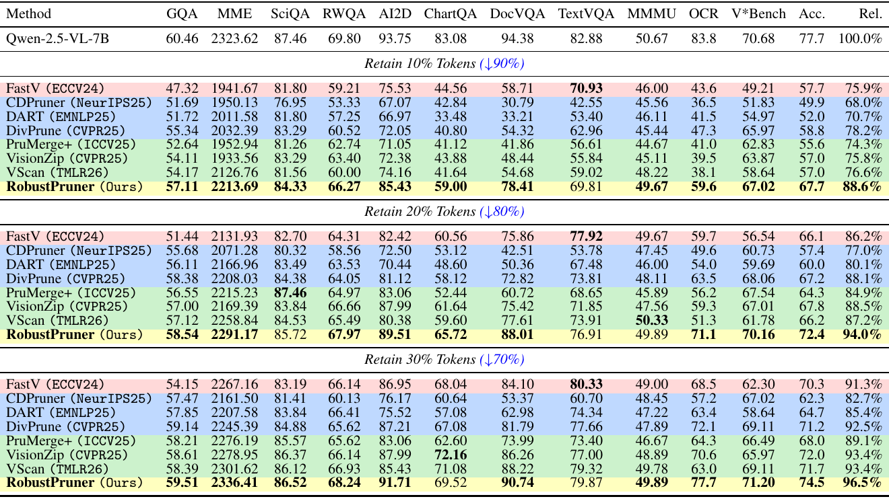
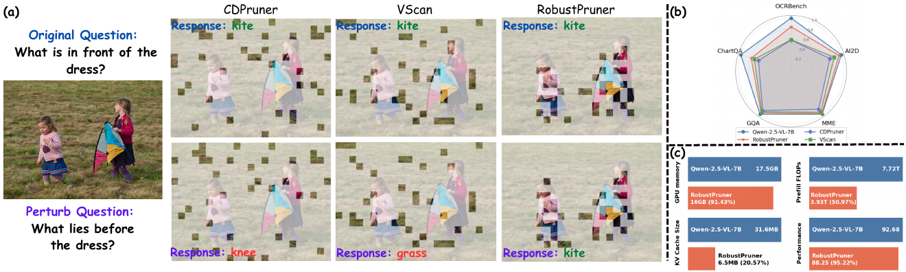
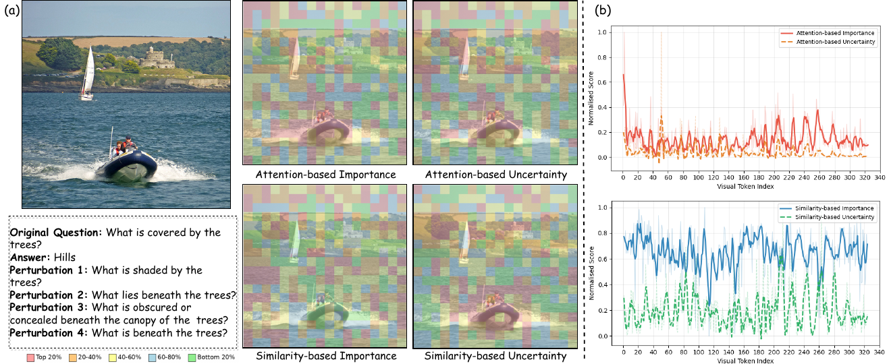
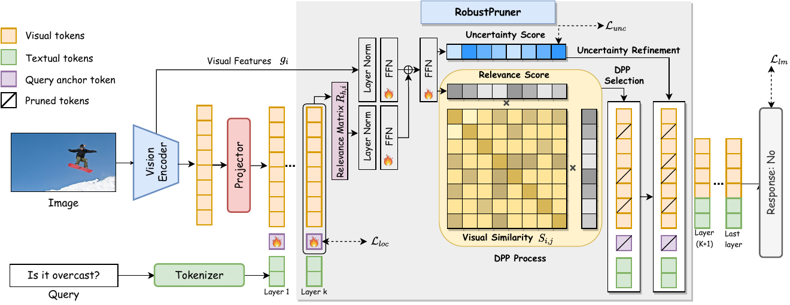
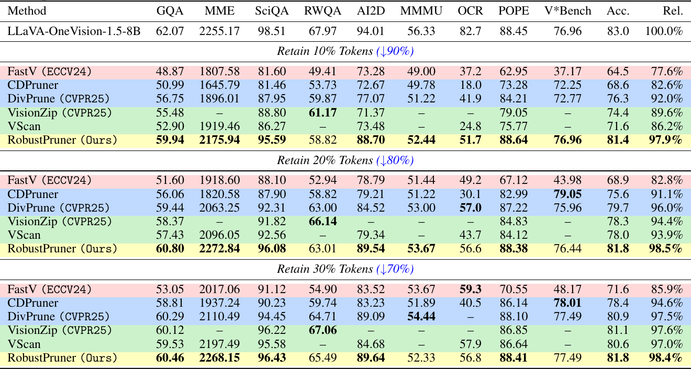
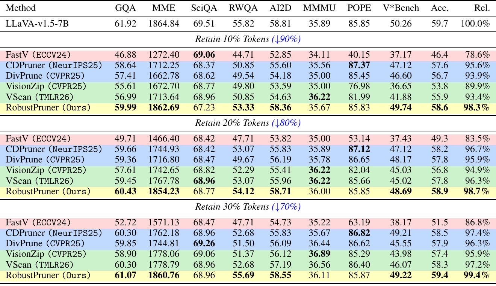
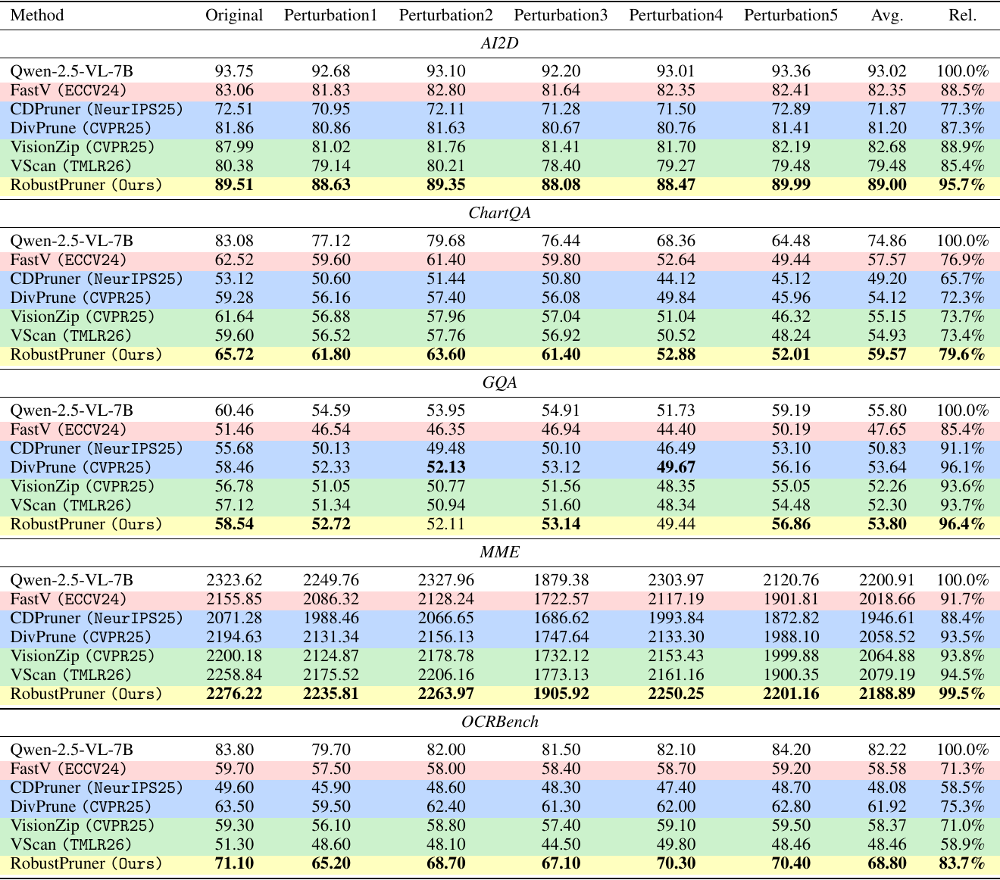
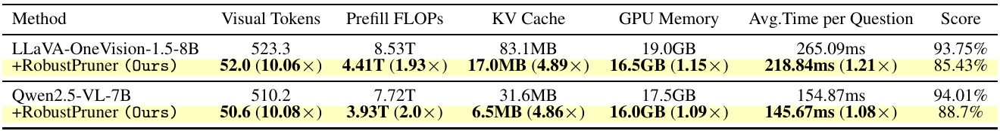
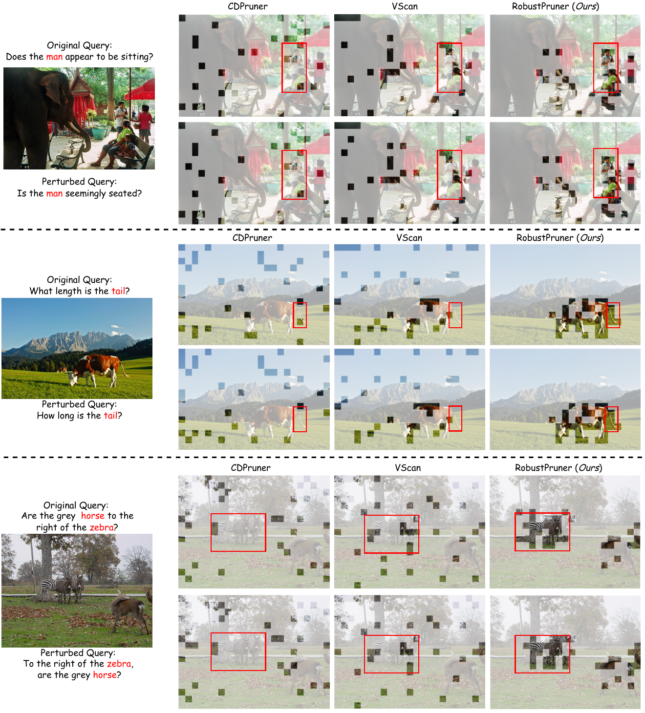

Qwen-2.5-VL-7B

1 Nanyang Technological University 2 The Chinese University of Hong Kong (Shenzhen) 3 Alibaba Group
Overview
Multimodal large language models (MLLMs) represent images as long sequences of visual tokens, making inference costly and often redundant. The central challenge is to prune these tokens aggressively without removing evidence required for reliable reasoning. Existing pruning methods typically rank tokens by estimated importance or redundancy, implicitly assuming that low-scored tokens are safe to discard. This assumption is fragile when small, occluded, or fine-grained visual cues are decisive and stable, and it becomes especially brittle under semantics-preserving prompt perturbations. We present RobustPruner, a decoder-integrated framework for prompt-robust and uncertainty-aware visual token pruning. RobustPruner predicts query-conditioned relevance, uses a determinantal point process (DPP) to construct a diverse candidate subset, and then applies uncertainty-guided refinement within that subset. By decoupling relevance and uncertainty, the method preserves ambiguous but potentially decisive evidence while remaining computationally efficient. Inserted into intermediate decoder layers, RobustPruner performs one-shot pruning and reduces KV-cache and memory costs. Across three open-source MLLMs and diverse vision-language benchmarks, RobustPruner consistently achieves a stronger accuracy–efficiency–robustness trade-off than prior pruning baselines, with especially clear gains on fine-grained and text-rich tasks. On Qwen-2.5-VL-7B, RobustPruner retains 95.22% of the original performance while reducing GPU memory, prefill FLOPs, and KV cache size to 91.43%, 50.97%, and 20.57% of the baseline.
Our code is available at https://github.com/oscakywalker/RobustPruner_2026.

Why uncertainty matters
Attention-based uncertainty. Attention importance spreads across salient regions, while instability under equivalent prompts clusters around thin boundaries, small structures and partially occluded content; attention magnitude alone does not reveal reliability.
Similarity-based uncertainty. Query–visual similarity gives a sharper relevance map, yet sparse uncertainty peaks remain around secondary objects and ambiguous cues, showing that relevance and uncertainty capture different information.

Pipeline
A token initialized from the instruction summarizes the query and visual context at the pruning layer.
A lightweight head scores each visual token using its interaction with the query anchor and visual features.
A DPP builds a candidate pool that balances query relevance with diversity among visual tokens.
The least uncertain candidates are kept to meet the final visual-token budget.

Evaluation
Across three MLLMs, RobustPruner preserves strong benchmark performance at 10%, 20% and 30% visual-token retention. The comparisons below reproduce the paper's results.



On Qwen-2.5-VL-7B, the paper evaluates an original question and five equivalent rewrites across AI2D, ChartQA, GQA, MME and OCRBench; RobustPruner retains more of the full-model performance than the compared pruning baselines.

Inference cost
At 10% visual-token retention on AI2D, RobustPruner uses about 10× fewer visual tokens, roughly halves prefill FLOPs and cuts KV cache size by nearly 5× on both tested backbones. GPU memory and time per question improve more modestly because the frozen backbone and the decoder's earlier layers still contribute to cost.
Our goal is not intended to maximize raw speed in isolation, but to provide a substantially stronger accuracy–efficiency trade-off under aggressive pruning

Qualitative results
Under equivalent question phrasings, RobustPruner more consistently retains patches near the queried person, animal feature or spatial relation.

Get in touch
Citation
@inproceedings{zhu2026robustpruner,
title = {RobustPruner: Decoupled Relevance and Uncertainty for Efficient Visual Token Pruning in MLLMs},
author = {Zhu, Hanwei and Fu, Junhan and Zhang, Xi and Wang, Jiamang and Lin, Weisi},
booktitle = {Advances in Neural Information Processing Systems},
year = {2026},
}